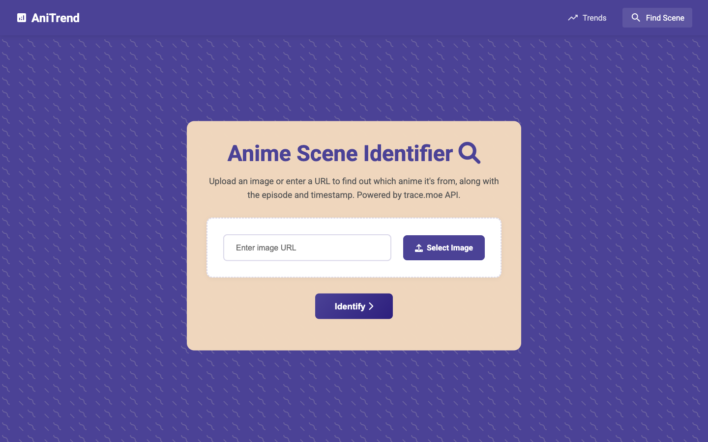
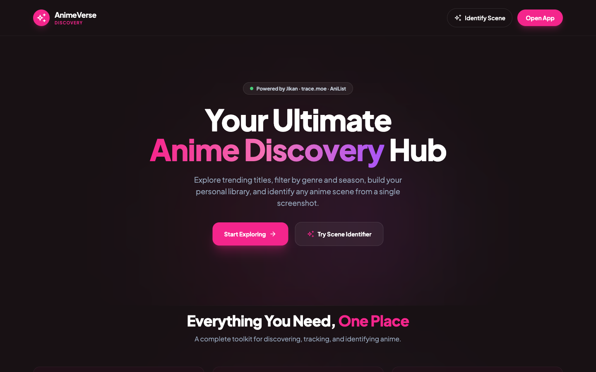
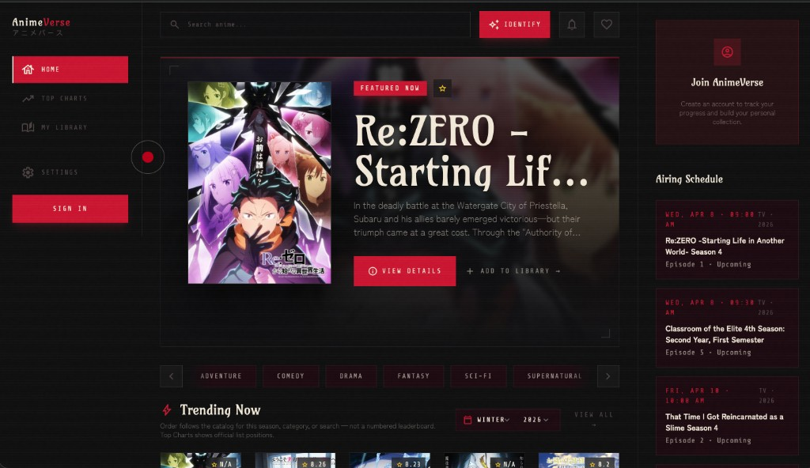
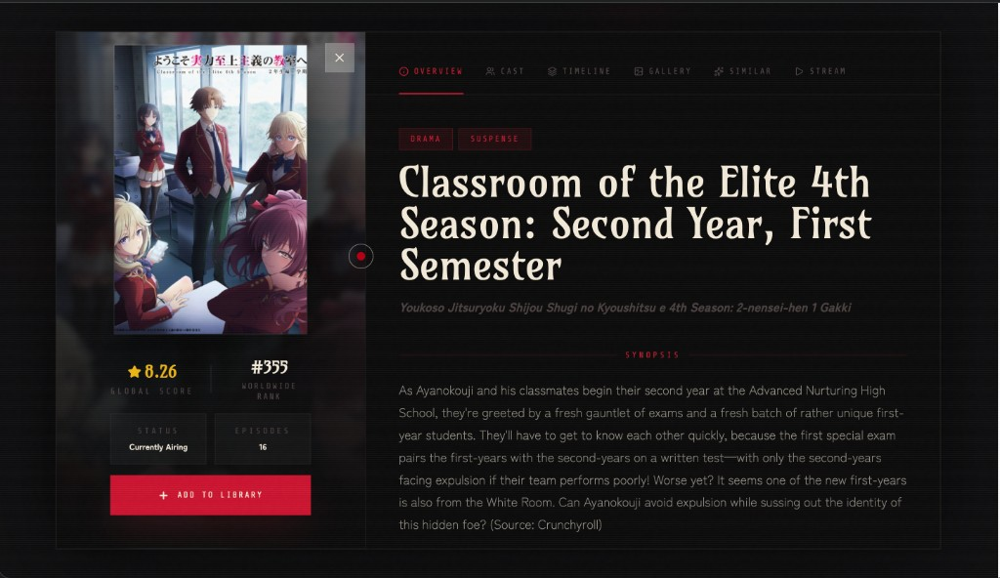

V1 · AniTrend · 2025
Made it work.
Vanilla JS and D3, built to prove the trace.moe path could power a real product. It worked — and felt like a developer tool.

Case Study · 2026
アニメバース · 三度作る
01 · The premise
Screenshot
→Reverse-image search
→Cross-reference catalog
→One surface.
02 · Research
Four tools shape how anime fans discover today. None of them stitch the screenshot → show page → library loop on one mobile-first surface.
The reference database — scoring, episode lists, decade of metadata.
— No scene ID. Mobile is an afterthought. Brand reads early-2000s.
Modern catalog with social features and a clean GraphQL API.
— No scene ID. Detail pages route away from browse — context lost.
First-party streaming for the licenses they own.
— Walled garden. Discovery shaped by what they license, not what's good.
Frame-match scene identification — the core utility.
— Pure utility. Once you have a match, you're back to bouncing tabs.
— What everyone's missing
I want to take a screenshot and end up in the show — without bouncing across five tabs.
— The job AnimeVerse actually solves
Vanilla JS and D3, built to prove the trace.moe path could power a real product. It worked — and felt like a developer tool.

React rebuild. Hot pink, editorial shell, persistent scene-ID modal. The first version with an opinion about how it looked — and a palette that fought the art it framed.

Crimson editorial system, library-first, mobile-respecting. Same APIs, completely different emotional response. The version that ships.

04 · Decisions
For each, I considered the obvious option and a sharper one. Here's what I picked, and what made it sharper.
Drop image → match → link out to the detail page. Simple to build, easy to share.
→ Felt like a separate tool, not a feature.Globally accessible from the nav. Match → land in detail without losing your scroll.
→ Browse and identify feel like one product.All metadata in a single document. Familiar. Traditional. SEO-friendly.
→ Routes away from grid — context lost on dismiss.Overview, Cast, Timeline, Similar, Stream. Same overlay, different views.
→ Dismiss returns you exactly where you were.Maximum engagement. Notify on every drop. Every. Single. Episode.
→ Becomes spam. Library degrades into noise.In-product only. Only saved titles. Only when 2 days out from airing.
→ Library feels alive — not noisy.05 · Shipped product
AnimeVerse 2.0 — seasonal discovery, tabbed detail modals, library, similar titles, and scene identification on one surface.
06 · Try it · Live
Same trace.moe + AniList path as the shipped V3 product. Paste a direct image URL or pick a sample — get the show, episode, timestamp, and a clip of the matched moment.
— Or pick a sample to identify
Powered by trace.moe ↗ + AniList ↗ · Same engine as V3 live
07 · Anatomy
The detail modal does a lot. Here's every component, what it pulls, and why it sits where it sits.

08 · Iteration
V3 didn't end at launch. A 320–414px responsive audit, copy that didn't match the data, and library behavior tuned from feedback — four changes in the first month.
Fixed-width filter bar broke at the smallest tested viewport. Replaced with flex-wrap and fluid sizing — survived 7 audit findings in one pass.
Users read it as algorithmic. Renamed to Top airing with a subtitle and loading text that don't imply the wrong data source.
Audit found 7 spots — chart badges, close button, tab strip. Bumped all interactive surfaces to iOS HIG minimums.
First version pinged on every episode. Reduced to a 2-day pre-air badge per saved title — library went from "noisy bookmark pile" to "quiet watchlist."
09 · Under the hood
No backend. The work was to make three independent data sources read like a single product.
10 · Visual language
Five tokens, three typefaces. Every choice mapped to the brand principle: crimson for intensity, sharp edges for editorial authority, Japanese type for cultural authenticity.
11 · Reflection
Three apps in, V3 is the version I'm proudest of — but the next iteration is already taking shape. Here's what I'd hand off to V4 if I were starting tomorrow.
Cold-loads against trace.moe + AniList + Jikan stacked. The product feels slow on first paint. V4 needs an edge cache for AniList responses and a service-worker shell — not as a performance pass at the end, but as part of the data layer.
320px works. Touch targets pass. But the loop — screenshot from a chat, identify, save — wants a share-sheet integration and a lock-screen widget. The web mobile pass earns trust; a native shell earns daily use.
The crimson editorial system gave V3 its identity, but it's a singular voice. V4 should explore the inverse: paper-tone canvas, ink type, crimson reserved for interaction states only. The brand survives the inversion if the typography does the heavy lifting.
Three iterations taught me the same thing three times: composition is the design. Same APIs, same screenshots — different choices about hierarchy, typography, and chrome give you three different products. V4 will be the fourth.